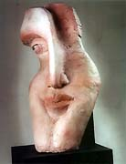
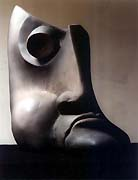
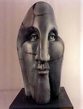
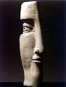
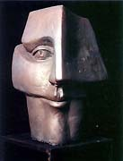
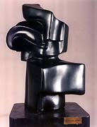
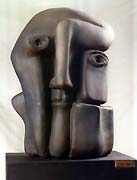
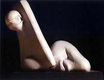
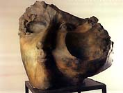
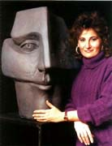

|
Susana Beibe
Argentinian ceramist.

Argentinian ceramist Susana
Beibe studied at the National School of Ceramics from 1966-69
and worked in the studios of ceramist Leo Tavella, sculptors Aurelio
Machi and Leo Vinci (b. 1931) and the painter Juan Carlos Distéfano
(b. 1933).

She makes stylised figurative sculpture, including torsos and heads,
and narrative wall murals and plaques. Her figurative sculpture
displays an influence of cubism, while in her ‘Wall’
series, barely discernable human figures appear to merge from the
clay.



Artist's Statement
The recurring theme of my work is the human being
and his destiny, the search for identity in a world bent on denying
it. The various series that I have carried out symbolize fragmented
man's search for a place in the world. These heads are witnesses,
always on guard and vigilant, always remembering their origins and
roots. Fragmented heads become a whole, and show their surprising
feelings of fear and trepidation, but also sensitivity and wakefulness
- feelings that help to find the path that all human beings tread,
dicovering their transience, their place. Heads that point to times
experienced in my country of tragedies and persecutions and that
help us to work through their memory, leaving behind the pain of
so much injured humanity - this search will reveal the mystery of
our times and the encounter with the 'new man'. Susana's website:
http://www.susanabeibe.com.ar.
More Artists of the Week
More Articles
|
{kind=link}
{kind=link}
{kind=link}
{kind=link}
{kind=link}
{kind=link}
{kind=link}
{kind=link}
{kind=link}
{kind=link}